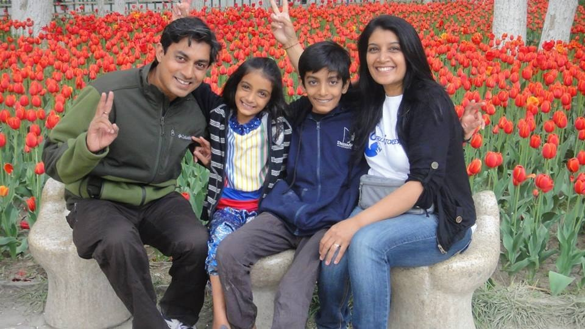

AKROSH COMPANY
AKROSH COMPANY
the organisation of ARA Foundation for Charity

COURAGEOUS FAMILY
Mr. Bharani Kumar, 49yrs old male was working in a private sector company and taking care of his family. He had one daughter and lived in Red hills. He was very much attached to his family members and he was a good friend to his daughter. The cause of brain death was rupture of cerebral aneurysm with SAH. He was shifted to RGGGH for Brain Death Certification.
When the counselors approached the family members they wanted to donate his organs and support the social cause. Even in their intense grief, the family members cooperated and fulfilled his wish by helping others.
Mr. Bharani Kumar organs (Kidneys, Liver, and Heart) were donated and 4 people got a second chance in life.
We respect Mr. Bharani Kumar's family for their courageous decision and for giving new life.